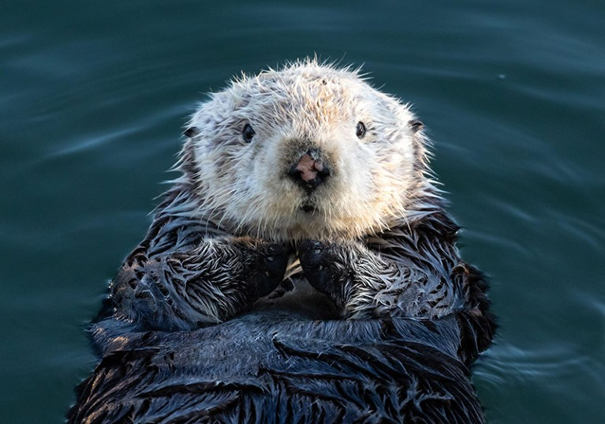
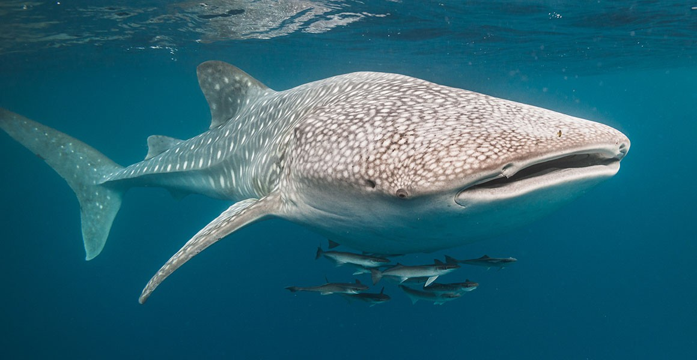

The Ocean
The ocean is a huge body of saltwater that covers about 71 percent of Earth’s surface. The planet has one global ocean, though oceanographers and the countries of the world have traditionally divided it into five distinct regions: the Pacific, Atlantic, Indian, and Arctic oceans. Beginning in the 20th century, some oceanographers labeled the seas around Antarctica the Southern Ocean, and in 2021 National Geographic officially recognized this fifth ocean.
An estimated 97 percent of the world’s water is found in the ocean. Because of this, the ocean has considerable impact on weather, temperature, and the food supply of humans and other organisms. Despite its size and impact on the lives of every organism on Earth, the ocean remains a mystery. More than 80 percent of the ocean has not been mapped, explored, or even seen by humans. A far greater percentage of the surfaces of the moon and the planet Mars has been mapped and studied than of our own ocean floor.

 Squid have been around for millions of years, and inspired legends of terrifying ship-devouring sea monsters. But far from brutes that terrorize humans, these masters of deception rely on their wiles to survive, and their ingenious behaviors have pushed forward futuristic innovations like intelligent camouflage and self-healing robots.
Squids have elongated tubular bodies and short compact heads. Two of the 10 arms have developed into long slender tentacles with expanded ends and four rows of suckers with toothed, horny rings. The body of most squids is strengthened by a feathery-shaped internal shell composed of a horny material. Squid eyes, almost as complex as human eyes, are usually set into the sides of the head.
Squid have been around for millions of years, and inspired legends of terrifying ship-devouring sea monsters. But far from brutes that terrorize humans, these masters of deception rely on their wiles to survive, and their ingenious behaviors have pushed forward futuristic innovations like intelligent camouflage and self-healing robots.
Squids have elongated tubular bodies and short compact heads. Two of the 10 arms have developed into long slender tentacles with expanded ends and four rows of suckers with toothed, horny rings. The body of most squids is strengthened by a feathery-shaped internal shell composed of a horny material. Squid eyes, almost as complex as human eyes, are usually set into the sides of the head.
 The lionfish, a longstanding showstopper in home aquariums, is a flourishing invasive species in U.S. Southeast and Caribbean coastal waters. This invasive species has the potential to harm reef ecosystems because it is a top predator that competes for food and space with overfished native stocks such as snapper and grouper. Scientists fear that lionfish will also kill off helpful species such as algae-eating parrotfish, allowing seaweed to overtake the reefs. In the U.S., the lionfish population is continuing to grow and increase its range. This is largely because lionfish have no known predators and reproduce all year long; a mature female releases roughly two million eggs a year.
The lionfish, a longstanding showstopper in home aquariums, is a flourishing invasive species in U.S. Southeast and Caribbean coastal waters. This invasive species has the potential to harm reef ecosystems because it is a top predator that competes for food and space with overfished native stocks such as snapper and grouper. Scientists fear that lionfish will also kill off helpful species such as algae-eating parrotfish, allowing seaweed to overtake the reefs. In the U.S., the lionfish population is continuing to grow and increase its range. This is largely because lionfish have no known predators and reproduce all year long; a mature female releases roughly two million eggs a year.

otters are opportunistic, feeding on whatever is most easily obtained. Diet often varies seasonally or locally, depending on which prey is available. River otters hunt visually while chasing fish, but they use their manual dexterity to dislodge crabs and crayfish from under rocks. Sensory hairs on the snout called vibrissae also assist by sensing water turbulence.
All otters are expert hunters that eat fish, crustaceans, and other critters. Sea otters have an ingenious method to open shellfish. A sea otter will float on its back, place a rock on its chest, then smash the mollusk down on it until it breaks open.
When it’s time to nap, sea otters entangle themselves in kelp so they don’t float away. They also sometimes intertwine their feet with another sea otter, so that they stay together.
River otters are especially playful, gamboling on land and splashing into rivers and streams. They learn to swim when they are about two months old, when their mother pushes them into the water.

A whale shark the size of a school bus swims slowly near the surface of the ocean. Its wide mouth is open, like an enormous net scooping up whatever happens to be around—mostly small fish, fish eggs, and plants. As the world’s largest fish, this won’t be a short trip—a whale shark needs to travel about 5,000 miles each year to find enough food.
Whale sharks spend nearly eight hours a day gulping around 10,000 gallons of ocean water. At nearly 40 feet long, they seem like they could eat whatever they want. But they’re really after plankton—microscopic plants and animals.
sources are National Geographic & Britannica